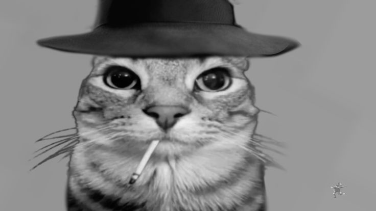

Вступ
Вітаю! Мене звати Іван Росоха, я студент 1-го курсу спеціальності Інженерія програмного забезпечення.
Нижче кілька пунктів про мене:
- Я люблю програмування та створення вебсайтів.
- Займаюся бодібілдингом та цікавлюсь спортом.
- У вільний час граю в Minecraft (Hypixel SkyBlock) і вивчаю Linux.
- Обожнюю Японську техніку особливо JDM 1990.
Зображення
